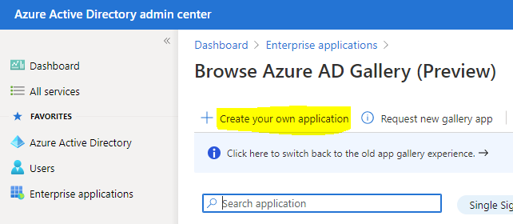
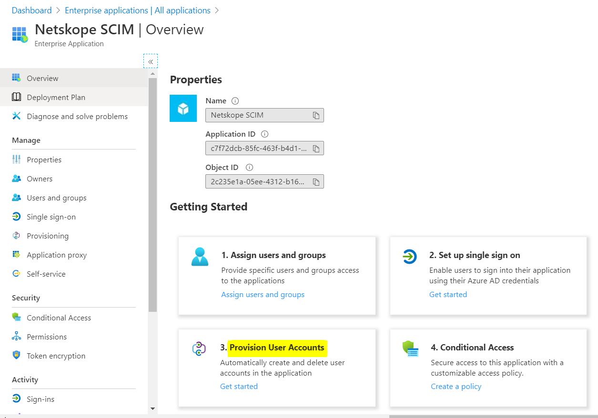
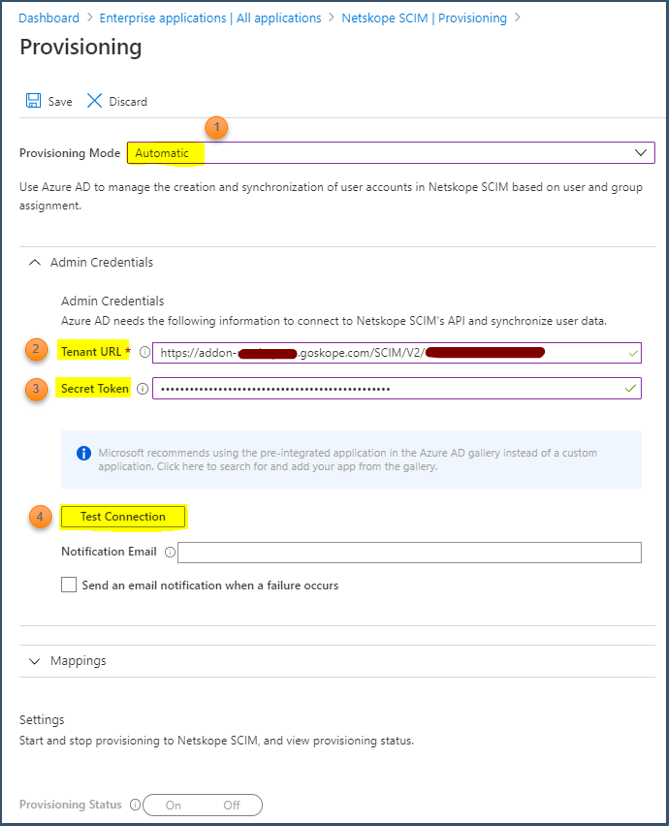
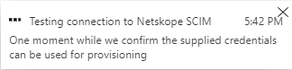
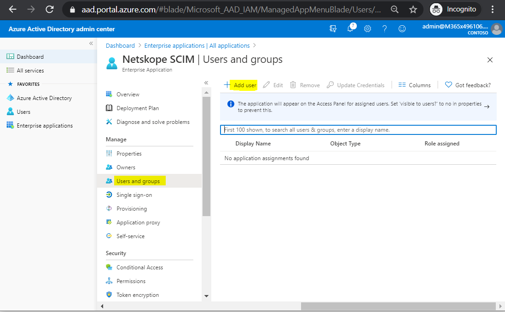
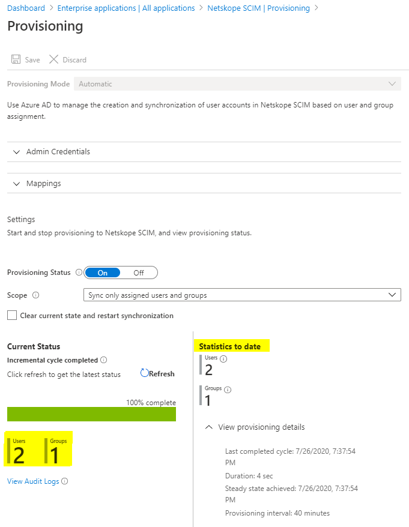
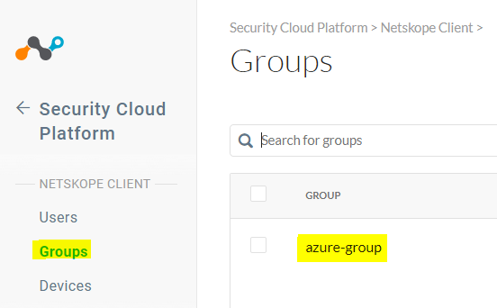
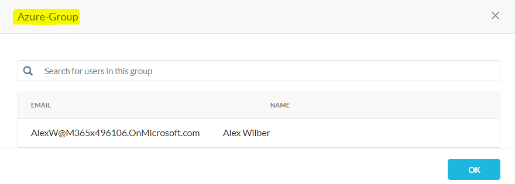
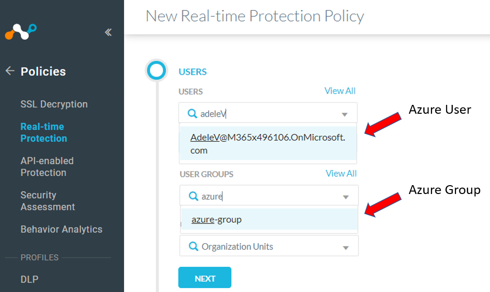

Configure Azure SCIM Integration to Onboard Users to Netskope
Log in to Azure AD console.

Go to Azure Active Directory > Enterprise Applications. Click New Application.

Search Create your own application.
 Note
If you are still using the old app gallery experience, then select Non-gallery application as shown.

Enter a name, like Netskope SCIM. Select Integrate any other application you don’t find in the gallery, and then click Create.

Note
If you are still using the old app gallery experience, then enter a name like Netskope SCIM, and then click Add

A message will be displayed application was added successfully.

Click Provision User Accounts.
 Click Get Started.

Select Provisioning Mode as Automatic.
Enter Netskope Tenant SCIM Server URL details.
Enter Netskope OAUTH Token for SCIM Client details.
Click Test Connection.
Note
You need to test the connection successfully before you save the configuration; otherwise, you will get an error during save.
  
You can check In the Netskope tenant where the Last Used Time gets updated.

Click Save.


Next set Provisioning Status to On.
Leave the default scope settings to Sync only assigned users and groups.
Click Save.


Add Azure users and groups to sync to the Netskope tenant.
Select Users and Groups and select Add user.
 Select Users and Groups and then select the users and groups from the list.
Click Select, and then click Assign.


The selected user and group will be listed as shown.

Go back to the Provisioning section.
Important
Azure SCIM Provisioning interval is 40 minutes.
Initial Sync

After 40 minutes
 Click View Audit Logs to view synchronization events, which can be used for troubleshooting issues.

Check Azure users in the Netskope UI under Settings > Security Cloud Platform > Users.

Check Azure groups in the Netskope UI under Settings > Security Cloud Platform > Groups.
  Azure SCIM can sync:
Users
Groups which also includes Users within the groups (nested groups not supported by Azure SCIM).
The Azure Users & Groups will also be available for selection in Real-time Protection Policies.

The SCIM configuration is complete.